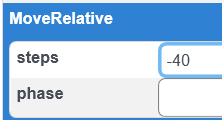
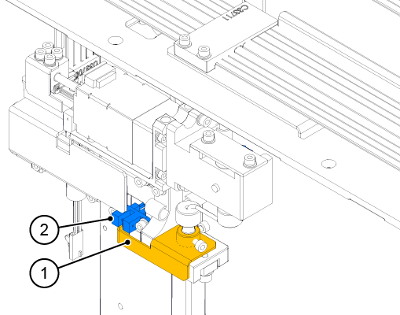

Go to
MENU > Machine Control to open the Machine Control page.
Go to
AliquotSamplePipettor > AliquotSamplePipettor.Assembly > AliquotSamplePipettor.ZAxis > AliquotSamplePipettor.ZAxis.Motor.
On the Action tab select
MoveRelative.

In the
steps box type
-40.
Select
Execute.
Step 4: Confirm the Collision Sensor Status
Go to
AliquotSamplePipettor > AliquotSamplePipettor.Assembly > AliquotSamplePipettor.CollisionSensor.
On the Action tab select
GetState.
Select
Execute. If the
state checkbox is selected, the collision sensor is on.
Tip: The LED near J11 on the DMCC board will be illuminated when the collision sensor is on.
Step 5: Check the Position of the Flag Bar
Inspect the flag bar.
Figure 384:

1
Flag bar
2
Collision sensor
If the flag bar interrupts the light path for the collision sensor but the
state checkbox was not selected for the
GetState action in
Step 4: Confirm the Collision Sensor Status, the collision sensor may be broken. Replace the collision sensor.
If the flag bar does not interrupt the light path for the collision sensor, replace the flag bar and mandrel holder.